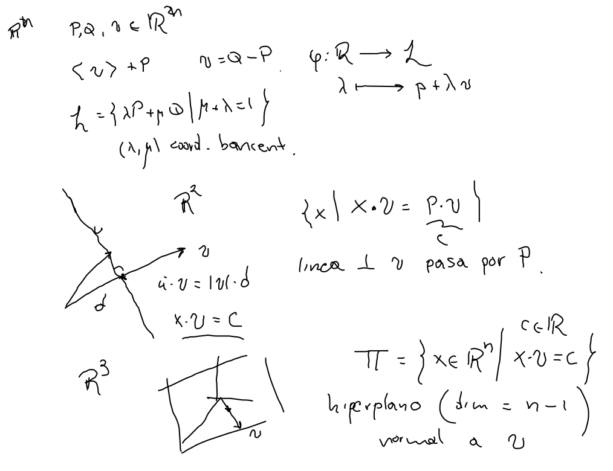
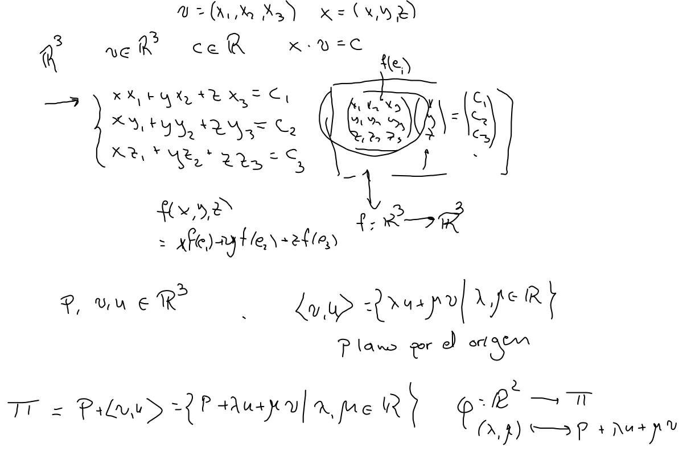
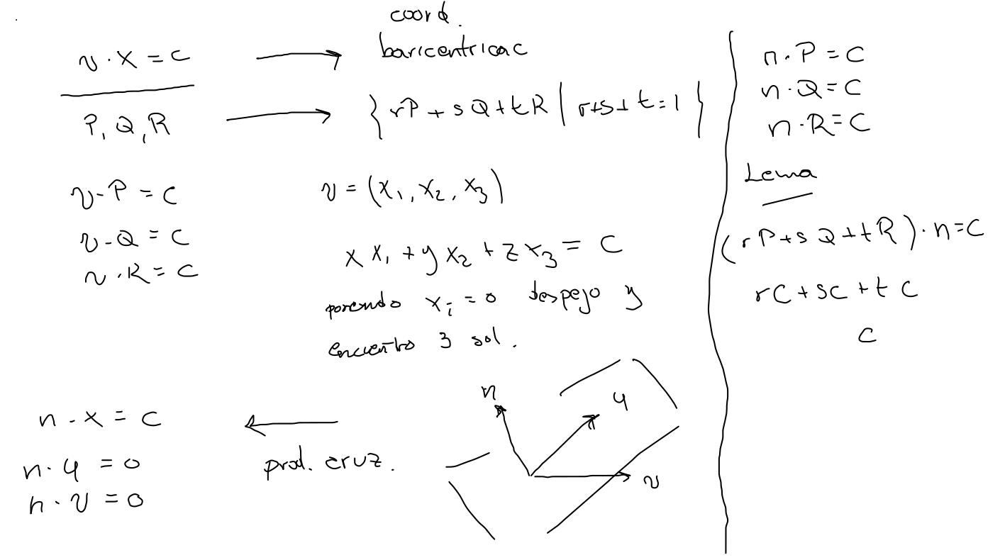
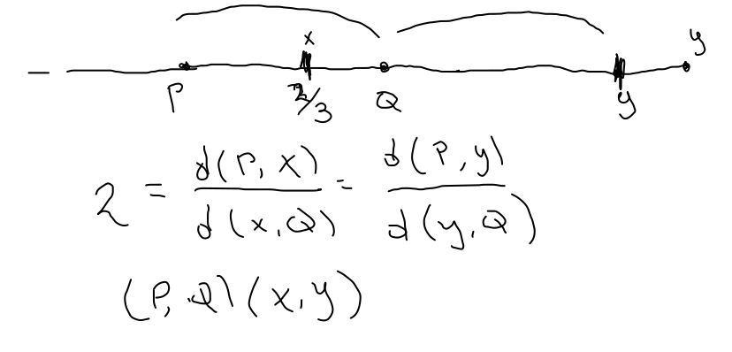
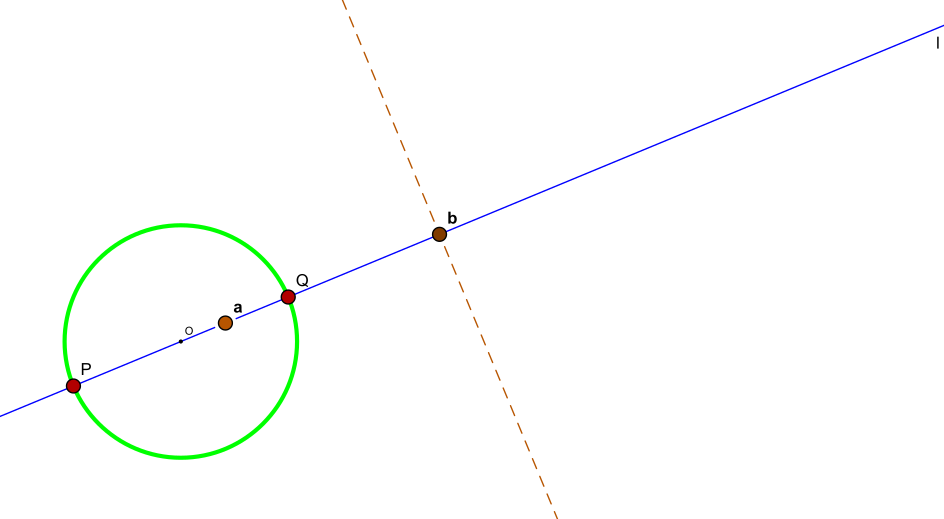

R2: Es ortogonal a v y pasa por P{x∈R2∣v⋅x=v⋅P}

Armónicos Hiperplanos
Π={x∈Rn∣v⋅x=c}
Define un hiperplano (plano de dimensión n−1 en Rn
Planos en el espacio R3
Considerando las ecuaciones que definen tres de ellos, el sistema de ecuaciones simultáneas se busca la intersección de los planos.

Parámetros
Dados P,v,u∈R3 parametrizamos al plano Π=P+⟨v,u⟩ con φ:R2(λ,μ)⟶⟼ΠP+λv+μu
Coordenadas baricéntricas
Tomando Q=P+v y R=P+u podemos describir el plano con coordenadas baricéntricas Π={sP+tQ+hR∣s,t,h∈R,s+t+h=1}

Para completar el ciclo de descripciones tomamos tres soluciones no colineales P, Q y R de una ecuación normal para describir el plano coordenadas baricéntricas y tomando dos diferencias v=Q−P y u=R−P podemos dar una descripción paramétrica.
Para encontrar el vector normal a un plano, necesitamos más herramientas.
Armónicos
Puntos que dividen en la misma razón un segmento

Conjugado
Se puede ver como una función (casi)
Polares
Afirmación El pie de la polar de un punto es su conjugado armónico con respecto al diámetro.
